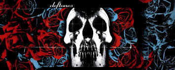

Metal Alternativo 🎸
Deftones (estilizado 𝓭𝓮𝓯𝓽𝓸𝓷𝓮𝓼) é uma banda americana de metal alternativo formada em Sacramento, Califórnia, em 1988. Eles foram formados pelo vocalista Chino Moreno, o guitarrista Stephen Carpenter e o baterista Abe Cunningham, com o baixista Chi Cheng e o tecladista e turntablist Frank Delgado se juntando à formação em 1990 e 1999, respectivamente. A natureza experimental da banda levou alguns críticos a descrevê-los como "o Radiohead do metal".
Após a formação se estabelecer em 1993, a banda garantiu um contrato de gravação com a Maverick Records e, posteriormente, lançou seu álbum de estreia, Adrenaline, em 1995. Extensas turnês e a promoção boca-a-boca do álbum ajudaram o Deftones a conquistar uma base de fãs dedicada. Seu segundo álbum, Around the Fur (1997), trouxe fama à banda na cena do metal alternativo e alcançou posições nas paradas junto com seus singles.
A banda obteve ainda mais sucesso com seu terceiro álbum, White Pony (2000), que marcou uma transição de seu som anterior, mais agressivo, para uma direção mais experimental. Seu primeiro single, "Change (In the House of Flies)", é o single de maior sucesso comercial da banda, e a faixa "Elite" ganhou um Grammy Award para Melhor Performance de Metal.
Em 2008, enquanto Deftones estava trabalhando em um álbum provisoriamente intitulado Eros, Cheng se envolveu em uma colisão de trânsito. Após o acidente, a banda interrompeu a produção e lançou o elogiado álbum Diamond Eyes em 2010. Seus álbuns seguintes, Koi No Yokan (2012), Gore (2016) e Ohms (2020), mostraram a experimentação contínua da banda. Seu décimo álbum, Private Music, foi lançado em 22 de agosto de 2025.

